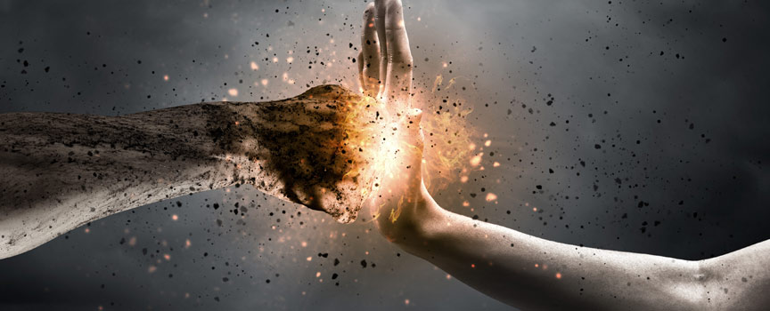
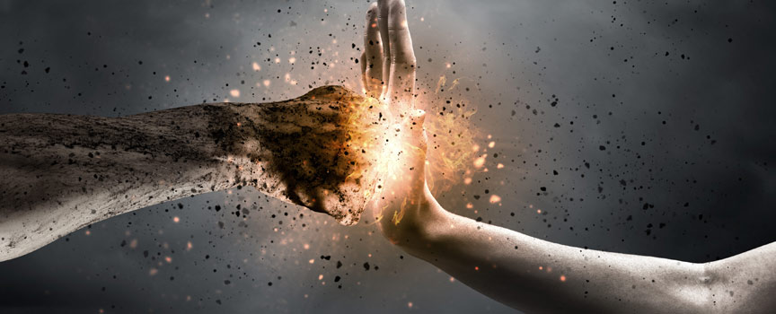

Benvenuto nel tuo spazio di formazione! Scopri un portale dedicato a renderti più preparato e sicuro nella vita quotidiana. Offriamo corsi accessibili e pratici per imparare: Prendi il controllo della tua sicurezza! La tua formazione inizia qui.

 

PRIMO SOCCORSO
ANTINCENDIO
DIFESA PERSONALE
SEZIONE PRIMO SOCCORSO ⚕️
Benvenuti nella guida al Primo Soccorso: salvare vite passo dopo passo Il primo soccorso è una competenza essenziale che ognuno di noi può apprendere per fare la differenza in situazioni di emergenza. Questa pagina è dedicata alla spiegazione delle manovre salvavita, comprese le tecniche di disostruzione delle vie aeree e le procedure BLSD (Basic Life Support and Defibrillation) per adulti, PBLSD (Pediatric Basic Life Support and Defibrillation) per bambini e lattanti. Imparerete come agire prontamente e correttamente in situazioni critiche, proteggendo vite preziose e fornendo il supporto necessario in attesa dei soccorsi professionali. La conoscenza di queste tecniche non solo contribuisce alla sicurezza degli altri, ma dà anche la sicurezza di sapere che potete essere parte attiva in una situazione di emergenza.
SEZIONE ANTINCENDIO üßØ
Benvenuti nella guida al Primo Soccorso: salvare vite passo dopo passo Il primo soccorso è una competenza essenziale che ognuno di noi può apprendere per fare la differenza in situazioni di emergenza. Questa pagina è dedicata alla spiegazione delle manovre salvavita, comprese le tecniche di disostruzione delle vie aeree e le procedure BLSD (Basic Life Support and Defibrillation) per adulti, PBLSD (Pediatric Basic Life Support and Defibrillation) per bambini e lattanti. Imparerete come agire prontamente e correttamente in situazioni critiche, proteggendo vite preziose e fornendo il supporto necessario in attesa dei soccorsi professionali. La conoscenza di queste tecniche non solo contribuisce alla sicurezza degli altri, ma dà anche la sicurezza di sapere che potete essere parte attiva in una situazione di emergenza.
SEZIONE DIFESA PERSONALE üí™üèΩ
Benvenuti nella guida al Primo Soccorso: salvare vite passo dopo passo Il primo soccorso è una competenza essenziale che ognuno di noi può apprendere per fare la differenza in situazioni di emergenza. Questa pagina è dedicata alla spiegazione delle manovre salvavita, comprese le tecniche di disostruzione delle vie aeree e le procedure BLSD (Basic Life Support and Defibrillation) per adulti, PBLSD (Pediatric Basic Life Support and Defibrillation) per bambini e lattanti. Imparerete come agire prontamente e correttamente in situazioni critiche, proteggendo vite preziose e fornendo il supporto necessario in attesa dei soccorsi professionali. La conoscenza di queste tecniche non solo contribuisce alla sicurezza degli altri, ma dà anche la sicurezza di sapere che potete essere parte attiva in una situazione di emergenza.